Claude Video Maker v1
Turn a script, a voiceover and a style into a finished reel. Every video is a project: you fill in its inputs once, review the brief, and Claude builds it with the same styles, brand rules and GPU pipeline the team already uses.
Project based
One project per reel. Every choice is saved in a single project.json, so nothing is lost and anything can be repeated.
Your styles, your brand
Pick a style from the library, add references with notes, apply the Uddhar brand kit. Save any good result as a new style.
Safe and controlled
Brief Review before generation, storyboard approval gate, lock files, versions you can compare, and targeted revisions.
Runs on your RTX GPU
NVIDIA RTX by default. Switch to Auto or CPU only per project or for the whole app.
Install
Takes about five minutes the first time. After that, one click on the desktop icon opens the app and updates it.
What the PC needs
| Tool | Why | Get it |
|---|---|---|
| Windows 10 / 11 | The app and installer are Windows only | — |
| Node.js LTS | Runs the app and the render engine | winget install OpenJS.NodeJS.LTS |
| Git for Windows | Downloads updates; provides bash for the render script | winget install Git.Git |
| FFmpeg | Posters, video checks, encoding | winget install Gyan.FFmpeg |
| Claude Code CLI, signed in | The generator. Run claude once and sign in | claude.com/claude-code |
| NVIDIA GPU (recommended) | Fast render. Without it use GPU: Auto or CPU only in Settings | Latest NVIDIA driver |
Method A: one-click setup (recommended)
- Click Download installer above (or take
Claude-Video-Maker-Setup.exefrom the Drive folder). - Double-click it. If Windows SmartScreen warns (the file is not code-signed), choose More info → Run anyway.
- It downloads the engine into
Documents\Claude Video Maker\engine, installs packages, and creates the Claude Video Maker shortcuts on the Desktop and in the Start Menu. - If it lists a missing tool, install it with the command shown, then run the setup again.
Method B: from a copy of the repository
git clone https://github.com/ShahriarAbir86/uddhar-discrete-math-reels.git cd uddhar-discrete-math-reels Install-Claude-Video-Maker.cmd
First run checklist
- Open the app, then Settings → This PC: Claude Code, Node, FFmpeg, Git Bash and Engine should all say found or ready.
- Set the Export folder (where finished videos go) and, if you use Google Drive for desktop, the Google Drive folder.
- Check GPU shows NVIDIA RTX and your card is named.
Update: every launch pulls the newest version. You can also press Settings → Check for updates. Remove: delete the two shortcuts and the Documents\Claude Video Maker folder (your projects are in there, so keep it if you want them).
Make your first reel in 5 steps
New Project
Projects → + New Project. Name it, e.g. “EP03 Pigeonhole Principle”.
Fill the Composer
Paste the script, choose a style (and Light or Dark), add the voiceover and any references.
Review & Generate
Check the Brief Review. Generate the storyboard first.
Approve
Read the storyboard and press Approve & build video. Watch the live log.
Revise & Export
Ask for targeted changes if needed, then Export to your folders.
Who does what
One person can play all three roles. The split shows which parts of the app matter to whom.
| Role | Goal | Uses | Typical actions |
|---|---|---|---|
| Creator / producer | Make a reel from a script and voiceover | Projects, Composer, Brief Review, Results, Library | Create project, fill inputs, generate, approve storyboard, revise, export, save a style |
| Reviewer | Judge quality and compare options | Results (Preview, Versions, Revise), Review Desk | Watch, copy timestamps, compare v1 with v2, write scene feedback, check time and token cost |
| Setup owner / admin | Install, update and tune the app for the team | Installer, Settings, Library (Brand Kits, Styles) | Install on each PC, set folders, choose GPU and model defaults, maintain brand kit and styles, protect finished projects with Lock |
Feature map
Every feature, where to find it, and what it does.
| Feature | Where | What it does |
|---|---|---|
| Project cards | Projects | Thumbnail, date, status (Draft, Generating, Generated, Exported), version count |
| Search and filters | Projects | Filter by name, style, status; sort newest, oldest or by name |
| New / Duplicate project | Projects | Start blank or copy an earlier project's inputs |
| Delete project | Projects (hover a card) | Moves it to a hidden trash folder, nothing else is touched |
| Import earlier episodes | Projects (empty state) | Brings EP01 and EP02 work in as projects |
| Content | Composer | Script, storyline, any files or whole folders (browse or drag and drop) |
| Style picker | Composer | Choose from the style library; Animation Story requires Light or Dark; per-project style notes |
| References + notes | Composer | Videos, images or links, each with a note saying what to take |
| Brand Kit | Composer | Logo position and size, colours, fonts, watermark, intro, outro |
| Special Assets | Composer | Stickers, B-roll, SFX, each with where to use it |
| Audio | Composer | Voiceover (timing source), background music, music volume, ducking |
| Output settings | Composer | Reels / Shorts / TikTok 9:16, YouTube 16:9, square; length, resolution, FPS, captions on/off and style |
| Engine & Render | Composer | Per-project GPU, render quality, Claude model, thinking effort, storyboard gate |
| Extra instructions | Composer | Free text in Bangla or English |
| Show Brief | Composer | Exactly what will be sent to Claude, copyable |
| Lock project | Composer | Blocks edits and generation, to protect an approved project |
| Brief Review | Review & Generate | Lists every file and choice; warns about missing or moved files, missing notes, no voiceover, GPU problems |
| Storyboard gate | Generate | Claude stops after the storyboard; you approve, with optional notes, before the build |
| Live log | Results → Log | Tools Claude used, decisions it narrated, and errors, as they happen |
| Stop | Results | Cancels a running generation |
| Production summary | Results → Preview | Active time, tokens, turns, API cost estimate, GPU and quality per version |
| Versions + compare | Results → Versions | v1, v2, v3 listed; pick two to play side by side |
| Revise | Results → Revise | Scene number, timestamp (⏱ grabs current time) and what to change; creates a new version, keeps the rest |
| Export | Results → Export | Copies MP4, storyboard, brief and run summary to the Export folder and the Drive folder |
| Download MP4 | Results → Preview | One-click download of the selected version |
| Save as Style | Results → Preview | Turns a finished video's look into a reusable style with a thumbnail |
| Styles library | Library | Built-in Whiteboard and Animation Story, your own, new style from reference, optional “Analyze with Claude” |
| Brand Kits | Library | Uddhar kit built in; create more (logo, colours, fonts, position, size, outro) |
| References and Assets | Library | Saved items with notes, added to any project in one click |
| Review Desk | Review Desk | All episodes with production summary and style comparison (the earlier preview app) |
| GPU choice | Settings / Engine | NVIDIA RTX only, Auto, or CPU only |
| Model, effort, permissions | Settings | Claude model, thinking effort, Accept edits or Bypass all prompts, max run time |
| Folders | Settings | Data, Export, Google Drive, Claude CLI path |
| Lock files | Automatic | Prevents two runs at once and edits during a run; cleaned up after a crash |
| Auto-export, keep logs | Settings | Export when a video finishes; keep each run's log |
| Update / Quit | Settings | Pull the latest version; stop the app |
Screen tour
Click any picture to enlarge it.
1 · Projects
Your dashboard. Cards show the thumbnail, style and mode, version count and date.
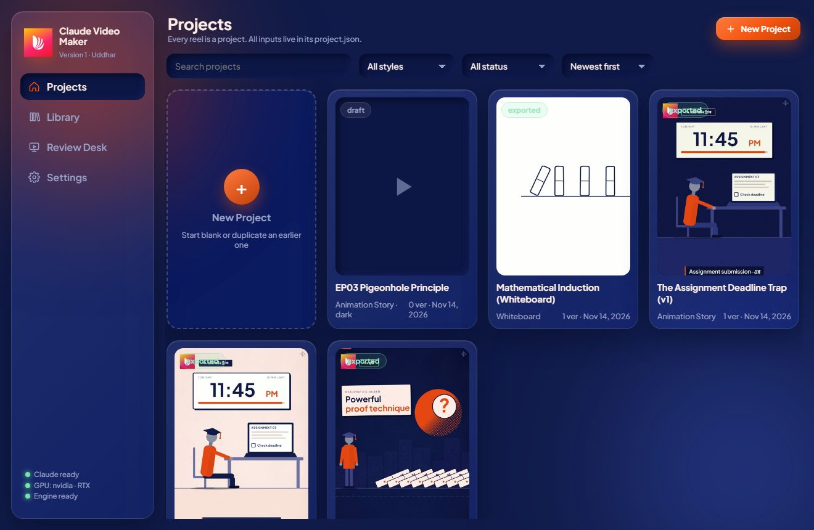
2 · Composer: Content
The left list shows every input section. A green dot means ready, orange means something required is missing.
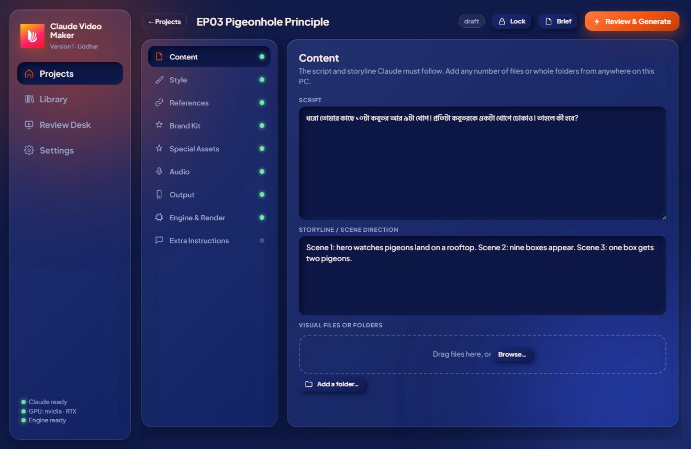
3 · Composer: Style
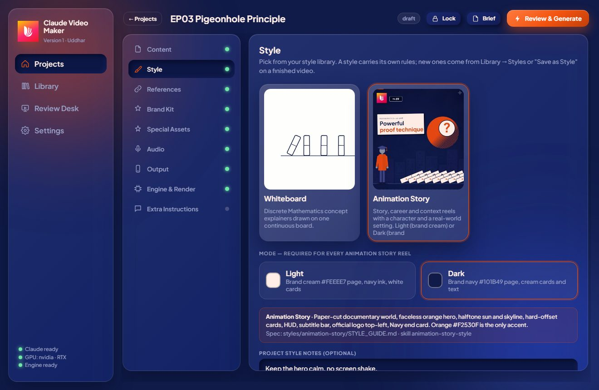
4 · Composer: References
The note is what gives a reference its value. Say exactly what to take from it.
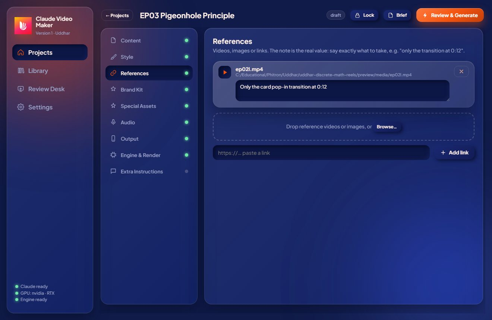
5 · Composer: Engine & Render
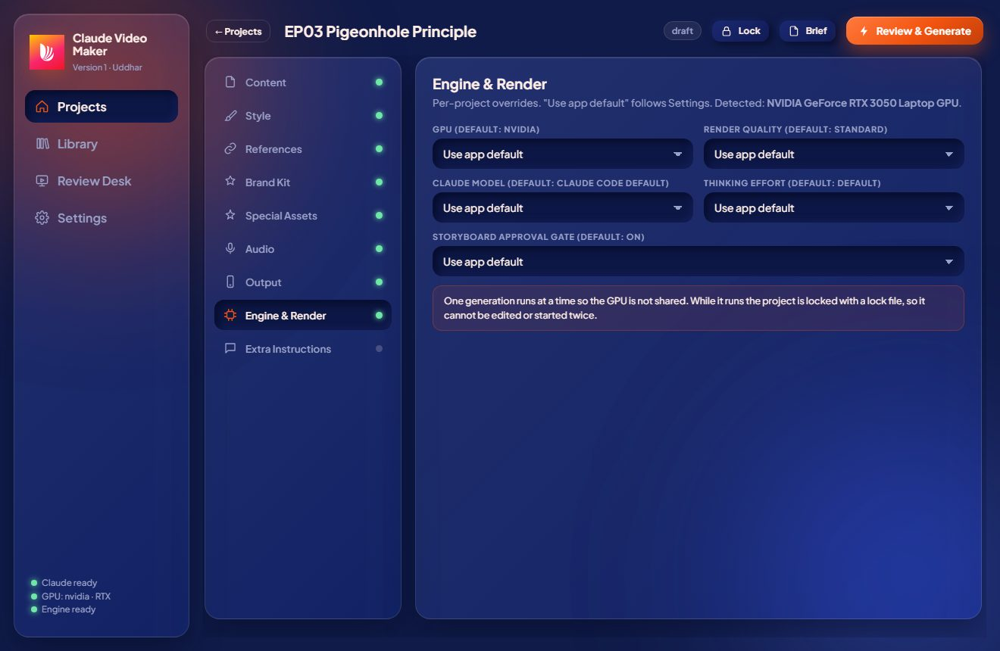
6 · Brief Review
Shown before anything starts. Problems appear in red or as warnings; you cannot generate while there is a red error.
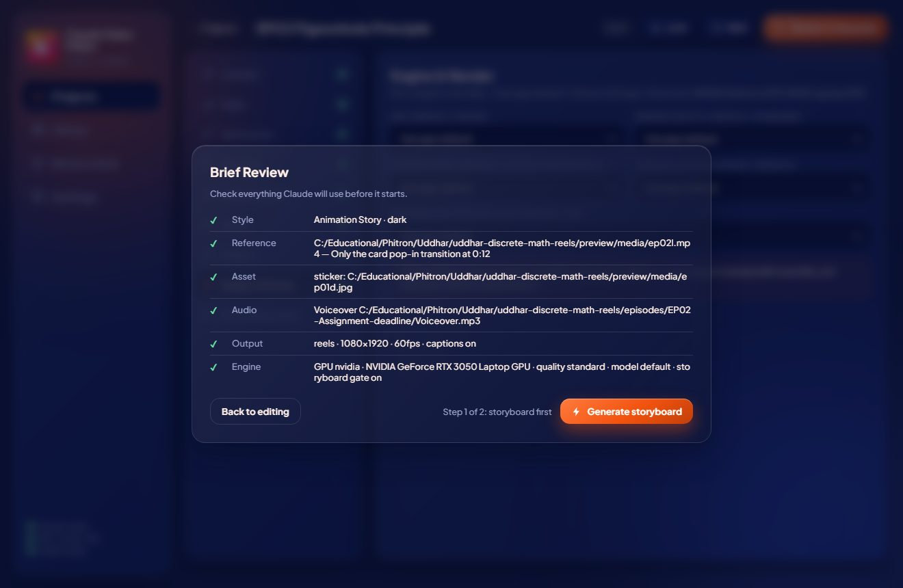
7 · Results
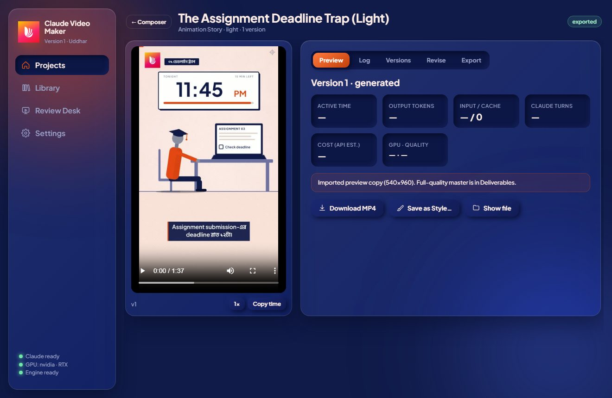
8 · Versions
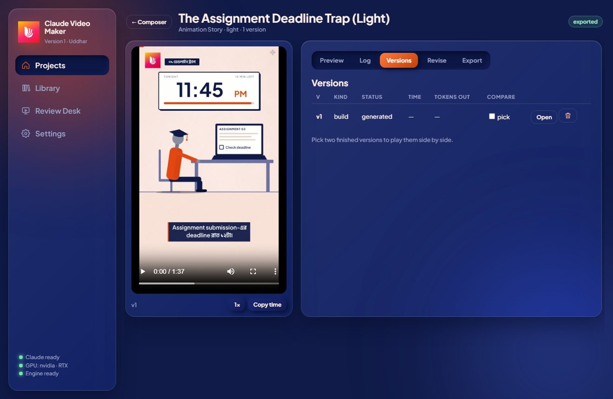
9 · Library
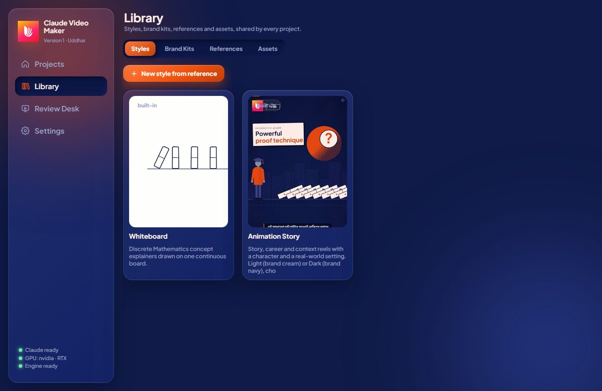
10 · Settings
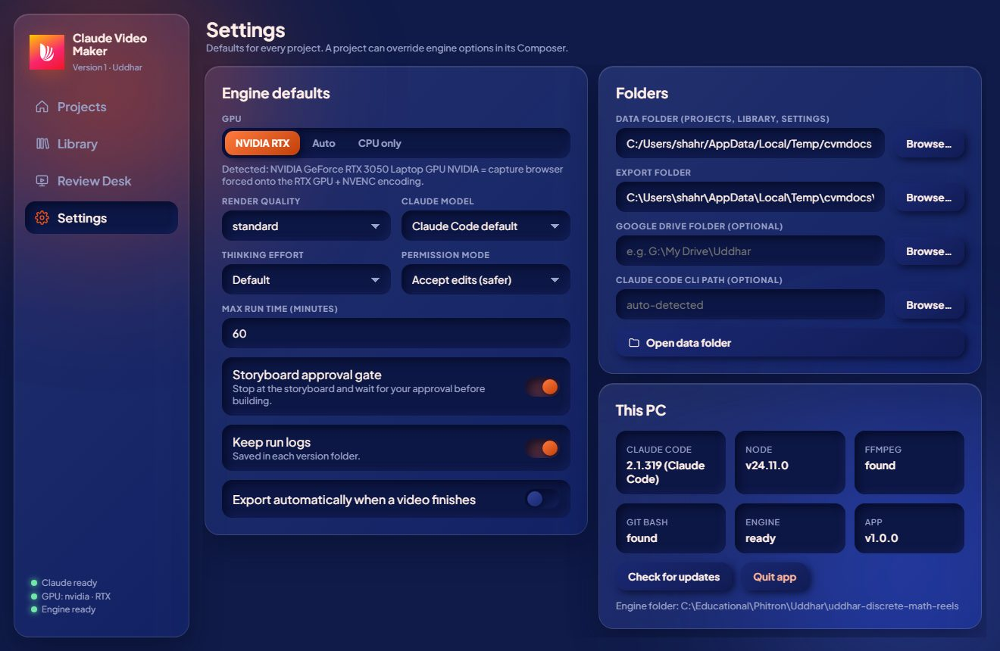
11 · Review Desk
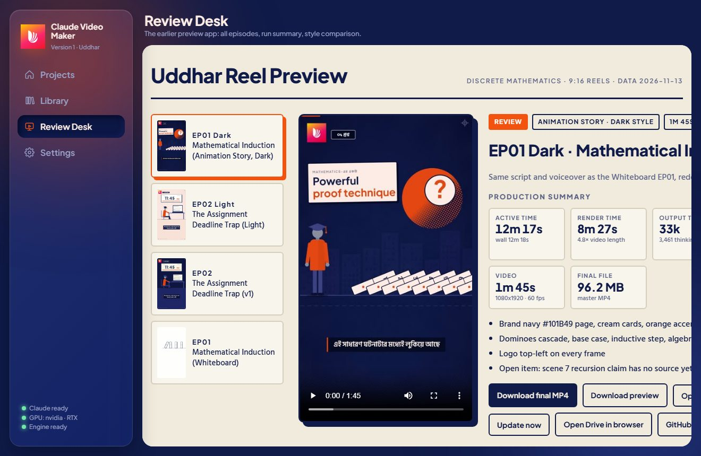
How-to recipes
Make a reel
- + New Project and name it.
- Content: paste the script (it is used as given). Add storyline notes or files if you have them.
- Style: choose one. For Animation Story choose Light or Dark.
- Audio: browse to the voiceover. It sets the timing.
- Review & Generate → fix any red items → Generate storyboard.
- When the storyboard appears, read it, add notes if you like, Approve & build video.
- When it finishes, watch it in Results.
Change one scene without redoing the video
- Results → select the version → play to the moment → Copy time.
- Revise tab → enter the scene number, press ⏱ to stamp the time, write what should change. Add more rows if needed.
- Revise → new version. Only the listed changes are made; the previous version stays.
Compare two versions
Results → Versions → tick pick on two finished versions → Play both.
Save a look as a style
Results → Preview → Save as Style… → name it and describe what defines it. It appears in Library → Styles with a thumbnail and can be chosen in any project.
Create a style from a new reference
Library → Styles → New style from reference → add the video or image → optionally Analyze with Claude to draft the rules → edit → Save.
Choose which GPU renders
Everywhere: Settings → GPU. One project only: Composer → Engine & Render → GPU. NVIDIA RTX forces the capture browser and encoder onto your RTX card.
Export for delivery
Results → Export → choose the version → Export. The MP4, storyboard, brief and run summary go to the Export folder and, if set, the Drive folder. Turn on Auto-export in Settings to do it automatically.
Protect an approved project
Composer → Lock. Editing and generating are blocked until you unlock it.
Reuse a project's setup
Projects → hover a card → duplicate icon. All inputs are copied; versions are not.
Under the hood
What happens when you press Generate
- The app writes
brief.mdfrom your project and the library. - A lock file is created for the project.
- It starts the Claude Code CLI inside the engine folder with your GPU, quality, model and effort choices.
- Claude follows the repo rules and style skill, renders through
tools/hf.sh(which reads the GPU choice), runs QA, and writesversions/vN/DONE.jsonandfinal.mp4. - The app records time, tokens, cost, GPU and quality for the version and releases the lock.
Where your data lives
Documents\Claude Video Maker\
settings.json app defaults
library\library.json styles, brand kits, references, assets
projects\<id>\
project.json every input of the project
brief.md what Claude was told
uploads\ files you dropped in
versions\v1\ final.mp4, poster.jpg, storyboard.md, log-*.jsonl
locks\ active run and app lock files
project.json at a glance
{ "name": "EP03 Pigeonhole Principle",
"content": { "script": "...", "storyline": "...", "files": [] },
"style": { "id": "animation-story", "mode": "dark", "notes": "" },
"references": [ { "type": "video", "path": "...", "note": "Only the card pop-in at 0:12" } ],
"brandKit": { "id": "uddhar", "logoPosition": "top-left", "logoSize": 120 },
"assets": [ { "kind": "sticker", "path": "...", "use": "Scene 2" } ],
"audio": { "voiceover": "...", "music": "", "musicVolume": 0.12, "ducking": true },
"output": { "platform": "reels", "width": 1080, "height": 1920, "fps": 60, "captions": true },
"engine": { "gpu": "", "quality": "", "model": "", "effort": "", "gate": null },
"versions": [ ... ] }
Troubleshooting
| You see | Why | Fix |
|---|---|---|
| “Claude Code CLI not found” | Not installed or not on PATH | Install it, sign in once with claude, or set its path in Settings → Folders |
| “Engine not ready” | Render packages not installed | Run the installer again, or npm install in the engine folder |
| Red “file missing or moved” | A file you added was renamed or deleted | Remove it in the Composer and add it again |
| Generate button disabled | A red item in Brief Review (often Light/Dark not chosen) | Fix the item and review again |
| “Another generation is running” | Only one run at a time | Wait, or press Stop on the running project |
| “Project is locked” | Lock is on, or a run is active | Unlock in the Composer, or wait for the run to end |
| GPU says NVIDIA but none detected | No NVIDIA driver or a PC without RTX | Install the driver, or set GPU to Auto / CPU only |
| Version “failed” | Claude hit an error or wrote no result | Open Results → Log, fix the cause (see error lines), generate again |
| App window does not open | Port 4180 busy or Edge/Chrome missing | Close other copies, or open http://127.0.0.1:4180 in a browser |
Good to know
Render time depends mostly on CPU frame capture, so a stronger GPU helps encoding more than capturing. Tokens and cost numbers come from the Claude CLI and are estimates. Imported episodes carry a 540×960 preview copy; the full-quality master stays in Deliverables.
Developed by Kazi Md. Shahriar
Claude Video Maker v1 was developed by Kazi Md. Shahriar for the Uddhar reels team at Phitron. It combines the Uddhar styles library, the HyperFrames render pipeline and the Review Desk into one project-based app.
Version 1.0.0 · Fonts: Hind Siliguri and Plus Jakarta Sans (SIL OFL) · The Uddhar logo is official artwork and must never be redrawn or recoloured.